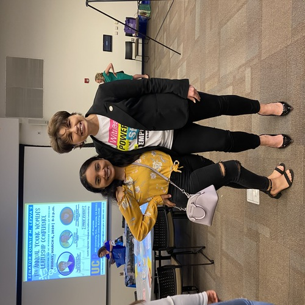
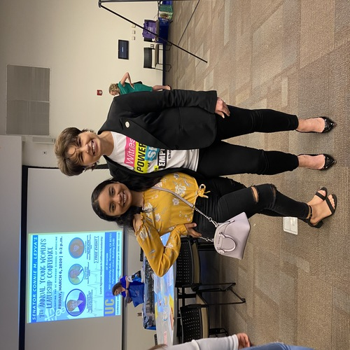

Cassandra Castro
Enter bio here
My name is Cassandra Castro and I am an aspiring Lawyer. I am a Hispanic woman, raised by immigrants. I am also a first-generation college student. Ever since I was 13 years old, I have wanted to be a Civil Rights Lawyer. My passion for being a lawyer has only grown throughout the years, especially after the 2020 uprising movement of Black Lives Matter and the fight against police brutality. I have always been deeply invested and informed about American politics and current events. I would like to become a Lawyer that works in favor of my clients justice and that protects their civil rights.
I grew up witnessing many abuses of power by the government, especially by the Executive Branch, the police, and many politicians. I have spent much of my time voicing my discontent on this and have been working to inform others about this very pressing issue in society today. My professional experience in being a Lawyer is very limited to having been an intern for a law firm and doing my own personal research on what pertains to a Civil Rights Lawyer. At the internship for a law firm, I was able to learn what Civil Rights lawyers do on a daily basis, the type of research and analysis they have to do for every case, and how they present themselves and their case in a court. I was able to be a Civil Rights Lawyer for a day and represent a client seeking to reaffirm their rights and freedoms according to the United States Constitution.
I am also passionate about becoming a Civil Rights Lawyer because I am unable to accept the injustices that occur in everyday life and am unwilling to sit by and do nothing about it. It is important that these injustices do not go unchecked and unchallenged by the American people.
Experience
Developer
• Stater Brothers employee for 9 months
• Intern for a Law firm
• Volunteer at Children's school
Volunteer at a children's school
• Ran sessions to help students read
• Reviewed and graded students tests and homework
• Created educational content to help the students learn math and english
• Created activities to help the students learn
Education
UC Riverside
University of California Riverside
University of California Riverside
Portfolio


